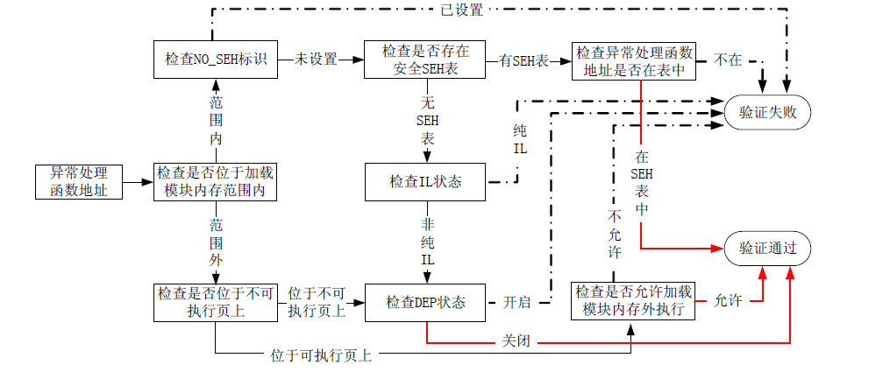
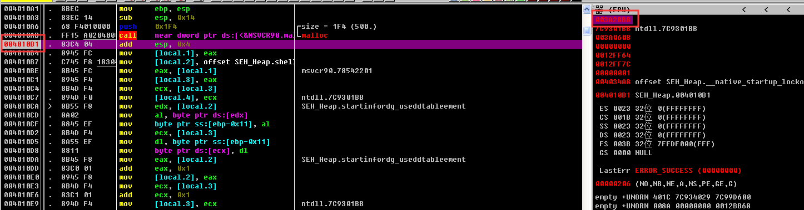
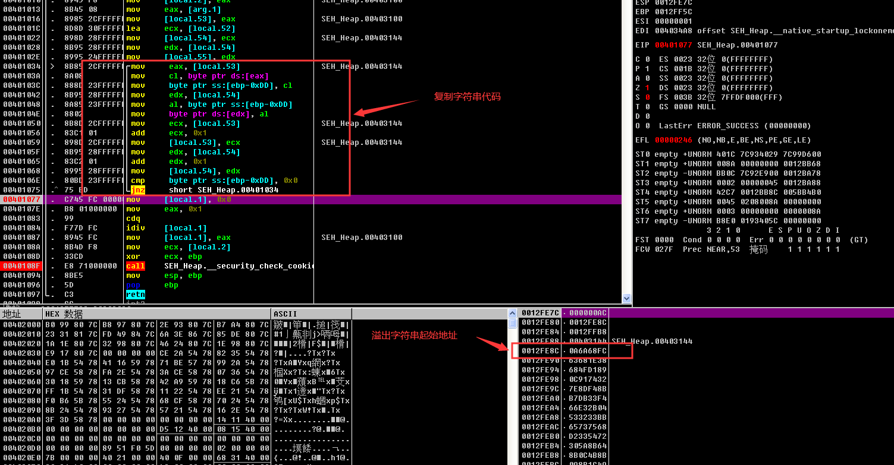
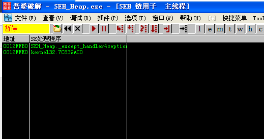
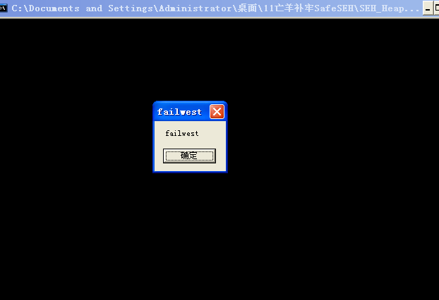

在Windows XP SP2 及后续版本的操作系统中，微软引入了著名的S.E.H 校验机制SafeSEH。
保护原理
（1）检查异常处理链是否位于当前程序的栈中，如果不在当前栈中，程序将终止异常处理函数的调用。
（2）检查异常处理函数指针是否指向当前程序的栈中，如果指向当前栈中，程序将终止异常处理函数的调用。
（3）在前面两项检查都通过后，程序调用一个全新的函数RtlIsValidHandler()，来对异常处理函数的有效性进行验证。
RtlIsValidHandler函数
（1）判断程序是否设置了IMAGE_DLLCHARACTERISTICS_NO_SEH 标识。如果设置了这个标识，这个程序内的异常会被忽略。所以当这个标志被设置时，函数直接返回校验失败。
（2）检测程序是否包含安全S.E.H 表。如果程序包含安全S.E.H 表，则将当前的异常处理函数地址与该表进行匹配，匹配成功则返回校验成功，匹配失败则返回校验失败。
（3）判断程序是否设置ILonly 标识。如果设置了这个标识，说明该程序只包含.NET 编译人中间语言，函数直接返回校验失败。
（4）判断异常处理函数地址是否位于不可执行页（non-executable page）上。当异常处理函数地址位于不可执行页上时，校验函数将检测DEP 是否开启，如果系统未开启DEP 则返回校验成功，否则程序抛出访问违例的异常
如果异常处理函数的地址没有包含在加载模块的内存空间，校验函数将直接进行DEP 相关检测，函数依次进行如下校验。
（1）判断异常处理函数地址是否位于不可执行页（non-executable page）上。当异常处理函数地址位于不可执行页上时，校验函数将检测DEP 是否开启，如果系统未开启DEP 则返回校验成功，否则程序抛出访问违例的异常。
（2）判断系统是否允许跳转到加载模块的内存空间外执行，如果允许则返回校验成功，否则返回校验失败。

RtlIsValidHandler()函数会在哪些情况下的允许异常处理函数执行。
（1）异常处理函数位于加载模块内存范围之外，DEP 关闭。
（2）异常处理函数位于加载模块内存范围之内，相应模块未启用SafeSEH（安全S.E.H 表为空），同时相应模块不是纯IL。
（3）异常处理函数位于加载模块内存范围之内，相应模块启用SafeSEH（安全S.E.H 表不为空），异常处理函数地址包含在安全S.E.H 表中。
我们来分析一下这三种情况的可行性。
（1）现在我们只考虑SafeSEH，不考虑DEP，针对DEP 的讨论我们放到下一节中。排除DEP 干扰后，我们只需在加载模块内存范围之外找到一个跳板指令就可以转入shellcode 执行，这点还是比较容易实现的。
（2）在第二种情况中，我们可以利用未启用SafeSEH 模块中的指令作为跳板，转入shellcode执行，这也是为什么我们说SafeSEH 需要操作系统与编译器的双重支持。在加载模块中找到一个未启用的SafeSEH 模块也不是一件很困难的事情。
（3）这种情况下我们有两种思路可以考虑，一是清空安全S.E.H 表，造成该模块未启用SafeSEH 的假象；二是将我们的指令注册到安全S.E.H 表中。由于安全S.E.H 表的信息在内存中是加密存放的，所以突破它的可能性也不大，这条路我们就先放弃吧。
所以 是有方法突破SafeSEH的 但比较麻烦 但还是有简单方法的突破的
（1）不攻击S.E.H（太邪恶了），可以考虑覆盖返回地址或者虚函数表等信息。
（2）利用S.E.H 的终极特权！这种安全校验存在一个严重的缺陷——如果S.E.H 中的异常函数指针指向堆区，即使安全校验发现了S.E.H 已经不可信，仍然会调用其已被修改过的异常处理函数，因此只要将shellcode 布置到堆区就可以直接跳转执行！
攻击返回地址绕过SafeSEH
如果碰到一个程序，他启用了SafeSEH 但是未启用GS，或者启用了GS 但是刚好被攻击的函数没有GS 保护（我们不考虑这种事情发生的概率，而且这种漏洞的的确确存在），攻击者肯定会直接攻击函数返回地址。
利用虚函数绕过SafeSEH
通过攻击虚函数表来劫持程序流程，这个过程不涉及任何异常处理，SafeSEH 也就只是个摆设。
从堆中绕过SafeSEH
1 | /***************************************************************************** |
对实验思路和代码简要解释如下。
（1）首先在堆中申请500 字节的空间，用来存放shellcode。
（2）函数test 存在一个典型的溢出，通过向str 复制超长字符串造成str 溢出，进而覆盖程序的S.E.H 信息。
（3）用shellcode 在堆中的起始地址覆盖异常处理函数地址，然后通过制造除0 异常，将程序转入异常处理，进而跳转到堆中的shellcode 执行。
首先在call malloc函数后打断点 确定在堆中申请空间的首字节

接下来看复制字符串的地址 还有SEH指针的位置


被溢出的字符串起始位置为0x0012FE8C，S.E.H 异常处理函数指针位于0x0012FFB0+4 的位置,所以我们使用300 个字节就可以覆盖掉异常处理函数指针。
